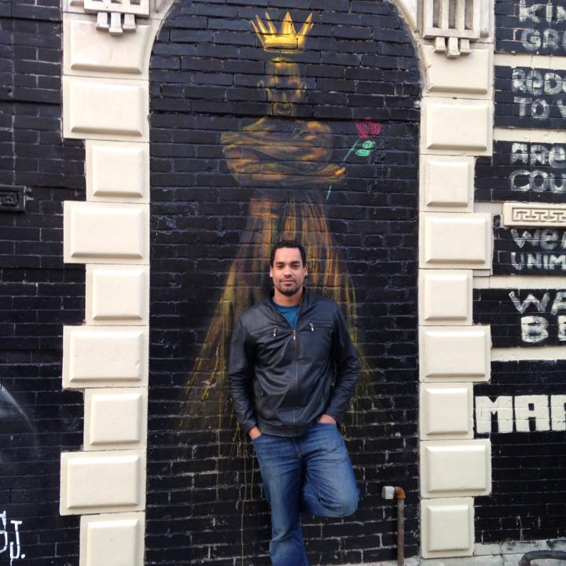
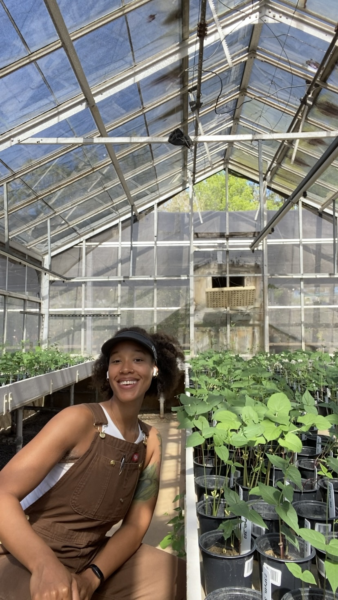
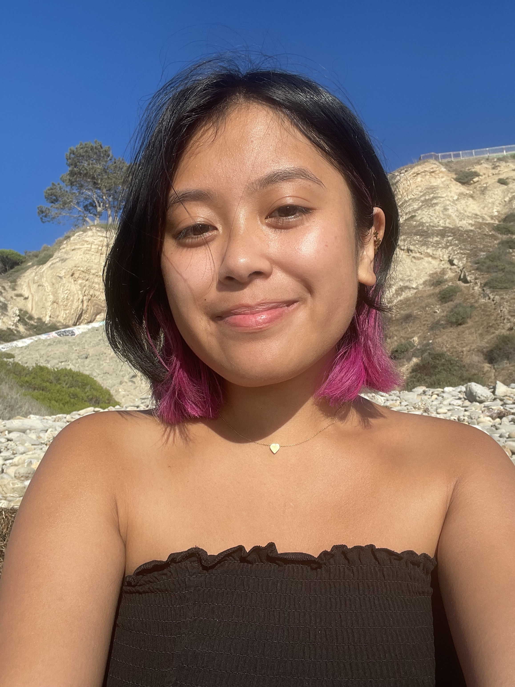
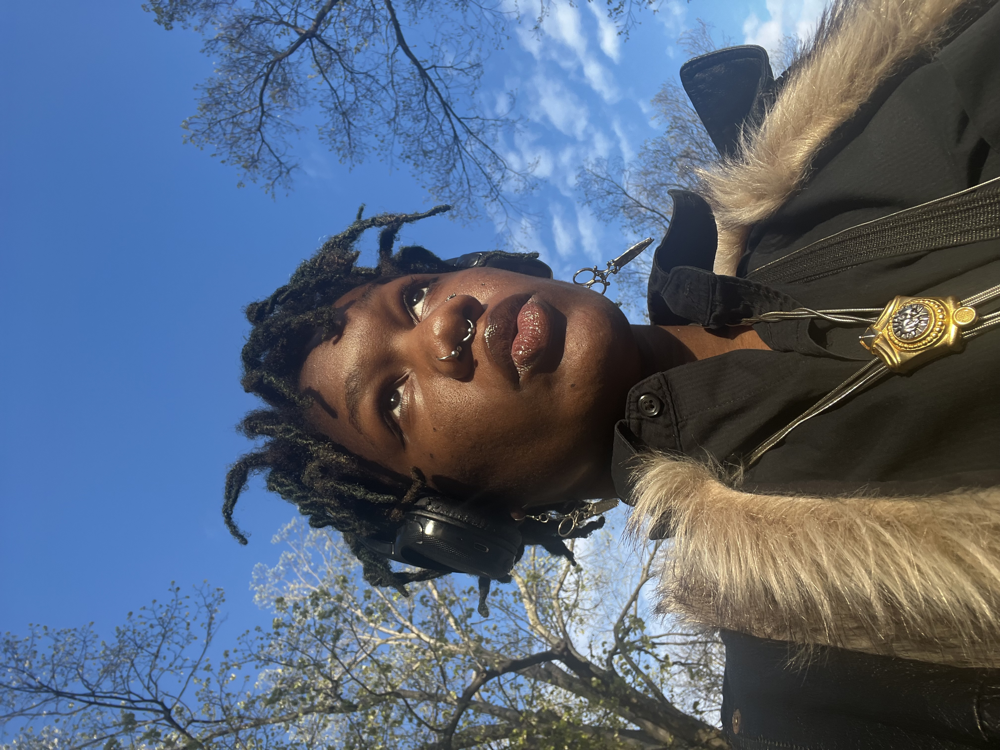
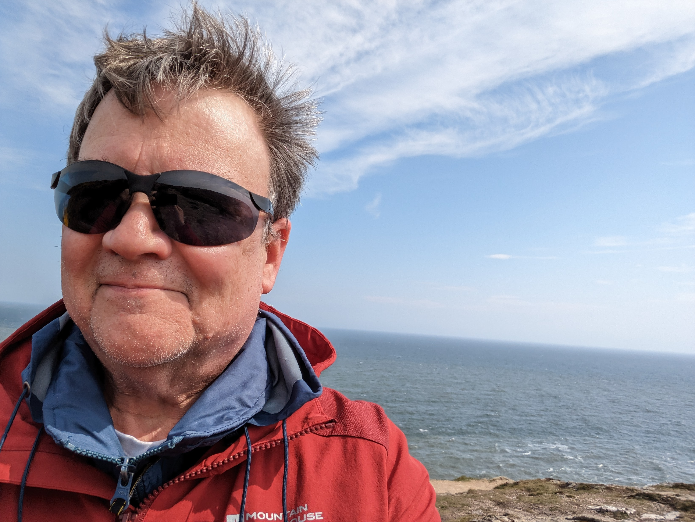
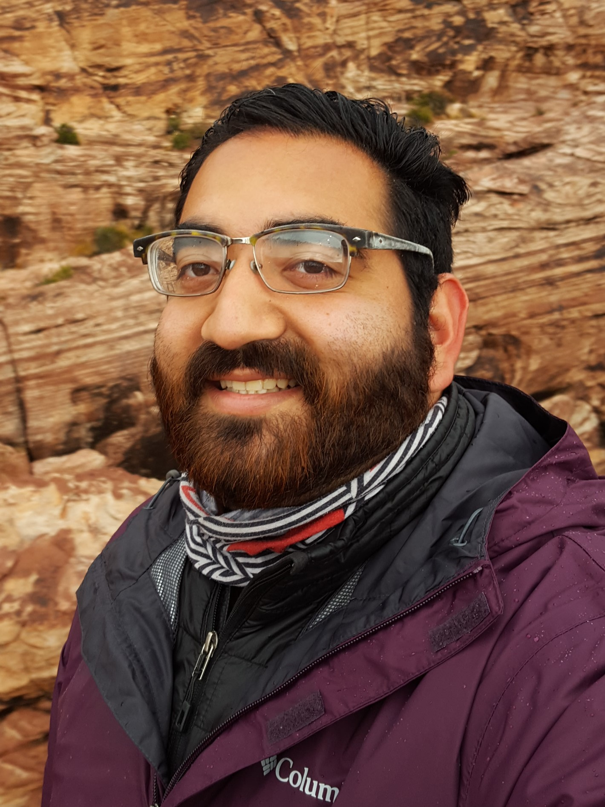
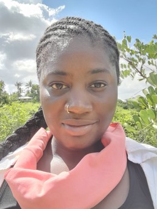
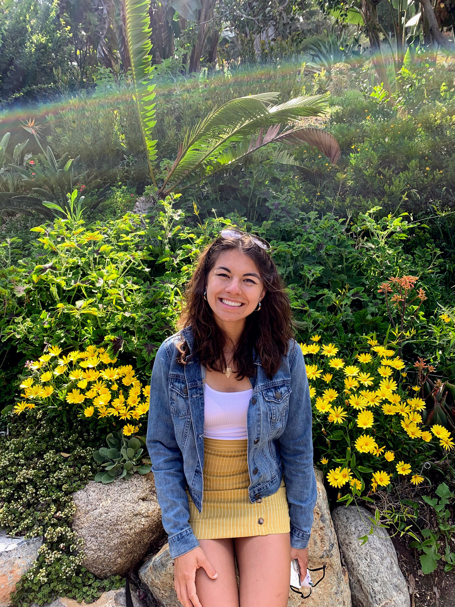
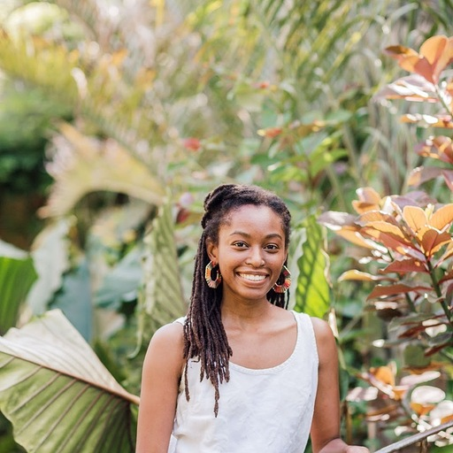

Network Members
Who: Individuals and Organizations
Black Earth Restoration Collective welcomes anyone working closely with plants, and tied into restoration or land management broadly (e.g., restoration practitioners, stewards, urban farmers, sustainability practitioners, academics, etc.).
BERC welcomes white and non-BIPOC allies who would like to support its mission.
Member Expectations and Code of Conduct
The BERC Code of Conduct is available here. Any violations to the Code can be reported using this form.
If you have any questions or would like to get in touch with the Black Earth Restoration Collective, please feel free to email us at blackearthrestoration [at] gmail [dot] com.
We acknowledge that not all information is meant to be shared with everyone and as such, are mindful of protecting the knowledge and personal information of our collective members. New members are not automatically featured on our website. If you are a member of the Black Earth Restoration Collective and would like to be featured on our members page or update your currently featured information, please email the following with the subject line “Information for Members Page: (Your Name)” to blackearthrestoration [at] gmail [dot] com:
Name & Pronouns
Title & Affiliation(s)
Email or other preferred method of contact, link to personal website/social media, etc.
Headshot
Our Members
Dr. Mila Marshall (she/her)
Sierra Club IL Chapter
LinkedIn

Mila Marshall Ph.D. works as the Clean Water Advocate for the Sierra Club IL Chapter and is a media personality and public speaker on climate, water and agriculture.
Dr. Samniqueka Halsey (she/her)
University of Missouri
Website
Samniqueka Halsey is currently an Assistant Professor of Ecosystem Health in the School of Natural Resources and the Faculty Fellow for Diversity for the College of Agriculture, Food and Natural Resources. As a computational ecologist, she takes integrative approaches to modeling complex systems while examining the consequences that management actions on biodiversity conservation and emerging disease systems play across a hierarchy of spatial and temporal scales.
Dr. Kathryn Amatangelo (she/her)
SUNY-Brockport
LinkedIn
I am interested in protecting and restoring natural landscapes impacted by invasive species and other factors.
Dr. Ryan Mann-Hamilton (he/him)
LaGuardia Community College
Instagram

Coastal Restoration, environmental justice, anthropology, restorative agriculture
Dr. Gabriela Nunez-Mir (she/her)
University of Illinois at Chicago
Website

Gabriela Nunez-Mir is an Assistant Professor in the Department of Biological Sciences at the University of Illinois at Chicago. Her research leverages the increasing availability of large bodies of ecological and environmental data to investigate the dynamics of biological invasions and other subjects of conservation concern at the macroscale (i.e. regional to continental spatial scales).
Chico Rivera (he/him)
Bok Tower Gardens
@naturechico
Instagram
I have a B.A in Geology and am working towards an M.S. in Forest Resources and Conservation. Currently working with Florida endangered plant species. I love birding, geography, and inspiring people to learn more about the natural world.
Jasmine Hart (she/her/they/them)
The University of Vermont
Instagram

I am a PhD candidate in crop breeding in genetics focusing on disease resistance in Tepary bean and participatory plant breeding. With my expertise in molecular genetics, I aim to help co-create culturally meaningful cultivars with diasporic communities. Together we can develop climate resilient, regionally adapted, and culturally relevant crops.
Carlos Enrique Minaya Arnao (he/him)
State Energy & Environmental Impact Center @ NYU School of Law
LinkedIn

My interest is in connecting people to nature and improving community health as a result. Whether that’s through community outreach, urban agriculture, conservation programs, or policy and communications work, my focus has stayed the same. I look forward to connecting with folks interested in building a healthier place.
Rina Talaba (she/her/they/them)
Northwestern University & Chicago Botanic Garden

I graduated from Kalamazoo College with a double major in Biology and Anthropology & Sociology. I obtained my Master’s Degree in Plant Biology and Conservation and continuing into my first year as a PhD student. My academic career has been centered in understanding of plant-insect interactions, climate changes effects in communities (Los Angeles and the Philippines), and overall building a strong community among students of color!
Kelly Coles (she/her)
Atlanta Botanical Garden
ecological restoration, rare plant conservation, ally
Tatiana Guider (she/her)
Chicago Botanic Garden
My practical work focuses on the training of future Natural Areas stewards through Chicago Botanic Gardens SENA internship program. Our primary goal is to ensure more advanced training and professional development is accessible to those from historically disinvested communities and the entire BIPOC community. My research interests focus on habitat quality modeling within the urban landscape as a way to inform landscape design practices and land use planning.
Jeff Claudy Synal (he/him)
Facebook
Dr. Alicia Foxx (she/her)
Chicago Botanic Garden
Website
restoration, data synthesis, equity
Tami Gordon (they/them)
Boston University
Instagram
 I am a student at Boston University pursuing a BA in Earth and Environmental Sciences. My professional interests include pursuing urban planning/consulting, environmental equity, and conservation ecology. Personally, I also love creative writing, film and TV, and photography! Over the course of my studies, I have enjoyed working in research settings and collaborating with my peers while also encouraging the inclusion of women of color and 2SLGBTQ+ identifying people in the diversification of the STEM world.
Dr. Stephen Murphy (he/him)
University of Waterloo
X

I’m a restoration and conservation ecologist who has broad interests but probably am most often recognized as working on mixedwoods plains ecosystems (deciduous forest, prairies, alvars, dry and wet meadows, quarrying and other mining sites). I’m Editor-in-Chief of Restoration Ecology (the SER journal). I have a strong interest in translational ecology intersecting with restoration ecology as a path towards greater inclusion.
Michael Viramontes (he/him)
Rivers & Lands Conservancy
Instagram

Michael Viramontes found his love of native plant restoration during his time at San Jose State University working on a B.S. in Environmental Studies. After working for 9 years in non-profit conservation and environmental education in both the SF bay area and southern California, Michael is now the Stewardship Manager at Rivers & Lands Conservancy (RLC) in Riverside, CA. Michael spends most of his time and energy at RLC figuring out how to protect and restore habitat for an endangered sandfly. In his free time, Michael helps organize the CNPS BIPOC Group.
Joycelyn Longdon (she/her)
University of Cambridge
Instagram

Joycelyn is an award-winning environmental justice researcher and educator, currently completing a PhD at Cambridge University working with bioacoustics - essentially Shazam for nature – and local forest communities in Ghana for biodiversity conservation.
Amelia Renner (she/her)
Chicago Botanic Garden
LinkedIn
Amelia Renner is a recent graduate of Macalester College. She majored in biology and minored in data science. Her research interests include urban ecology, non-native plant invasion, and restoration ecology. Her current research focuses on the impact of deer on Alliaria petiolata (garlic mustard) invasion in Minnesota oak forests.
Mary Nell Armstrong (she/her)
Georgia DNR Wildlife Conservation Section
Instagram
I work in prescribed fire / habitat management, restoring and maintaining native ecosystems and supporting the species that call them home. I am a woodland critter living amongst the trees, my home in the forest is powered entirely by solar power, I live off-grid as sustainably and mindfully as I can and am motivated by civic responsibility as a citizen of the world. I love plants, animals, people, and prescribed fire and I am excited to be a part of this new community!
Dr. Matthew McCary (he/him)
Rice University
Website
soil ecology, food webs, biological invasions, DEIJ in STEM
Dr. Kelly Ksiazek-Mikenas (she/her)
Elmhurst University
Urban plant ecology
Sudan Kariuki (she/her)
Cornell University Ecology and Evolutionary Biology
Website

I am an applied biogeochemist. My work explores plant- and soil-driven nutrient dynamics and their sensitivity to difference disturbances and management regimes. I am working on a PhD in Ecology and Evolutionary Biology at Cornell University exploring these themes in the sacred kaya forests of coastal Kenya.
Kyla Knauf (she/her)
Northwestern and Chicago Botanic Garden

plant phenology, climate change, plant communities, plant-pollinator interactions, restoration science, conservation, Rocky Mountains, Chicagoland
Emma Leavens (she/her)
The Morton Arboretum
Willow Mar (she/her)
Atlanta Botanical Garden
I am an ecologist and enviromental activist. I am curious about the interactions between ecosystems and people. I have a special interest in conservation efforts of vulnerable and endangered species in coastal regions.
Carson B. (she/they)
Atlanta Botanical Garden
Instagram

Conservation horticulture, Black ecologies, Indigenous ecologies, Spiritual ecology, Sense of place, Community, culture, people and plants, climate change, environmental justice, decolonization, land back